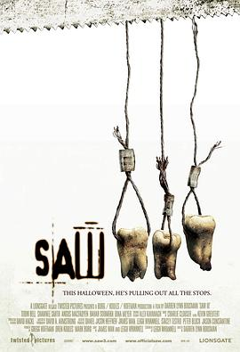

电锯惊魂3 / Saw III
又名：夺魂锯3(台) / 恐惧斗室3死神在齿(港) / 你死我活3 / 链锯惊魂3
几场没有出路的闹剧看下来只觉得是虐杀而非前两部所谓重生救赎了。摄影与剪辑依旧上大分，但剧情实在不敢恭维。另外服化道也太强了，我几番生理厌恶。最后结束的BGM好经典了。
作品信息
| 导演 | 达伦·林恩·鲍斯曼 |
| 编剧 | 雷·沃纳尔 / 温子仁 |
| 主演 | 托宾·贝尔 / 肖妮·史密斯 / 安古斯·麦克菲登 / 巴哈·索莫克 / 唐尼·沃尔伯格 / 迪娜·迈耶 / 雷·沃纳尔 / 姆波·可霍 / 贝瑞·弗莱特曼 / 雷瑞克·本特 / J·拉罗斯 / 黛布拉·麦凯布 / 科斯塔斯·曼迪勒 / 贝茜·拉塞尔 / 妮娅姆·威尔逊 / 艾伦·范·斯普朗 / 金·罗伯特 |
| 类型 | 悬疑 / 惊悚 / 恐怖 |
| 制片国家/地区 | 美国 / 加拿大 |
| 语言 | 英语 |
| 上映日期 | 2006-10-27(美国) |
| 片长 | 108分钟 / 113分钟(未分级版) / 121分钟(导演剪辑版) |
| IMDb | tt0489270 |
说过什么
2026-06-03 15:32:30
广播 · 看过 · ★★★☆☆
几场没有出路的闹剧看下来只觉得是虐杀而非前两部所谓重生救赎了。摄影与剪辑依旧上大分，但剧情实在不敢恭维。另外服化道也太强了，我几番生理厌恶。最后结束的BGM好经典了。
最后一次看到是 2026-10-07T23:12:45+08:00 · 豆瓣原页